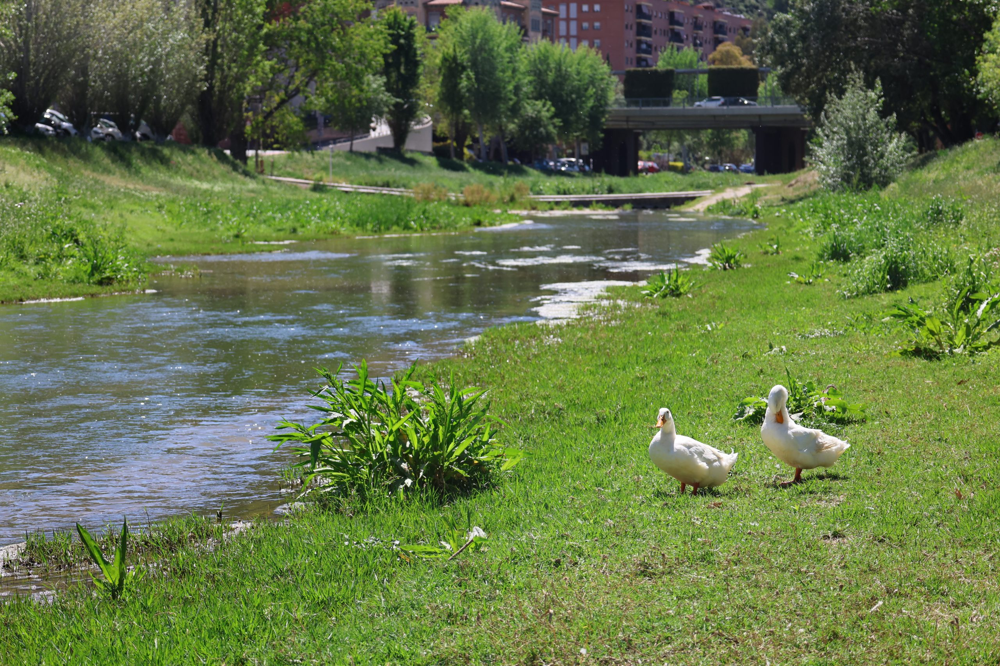

Qué es Senderismo en Martorell?
Senderismo en Martorell es un lugar donde descubrir y compartir las mejores rutas al aire libre para practicar senderismo, ciclismo y muchas otras actividades.
Noticías

Descubre Martorell
Martorell es un municipio del Baix Llobregat, situado en la orilla derecha .
Leer másDescubre rutas
Descubre las mejores rutas para hacer senderismo en Martorell y alreadedores
Leer más